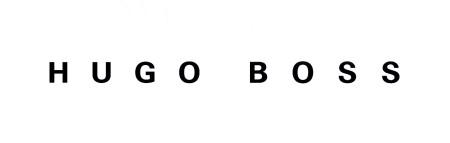

홈 > 브랜드 매거진 > 휴고 보스
휴고 보스
휴고 보스(Hugo Boss)는 1924년 독일 메칭겐에서 후고 페르디난트 보스가 설립한 독일 패션 기업이다.
산업 분야 패션·럭셔리 · 공개 등급 자료 기반 · 브랜드 평가 4.3 ★

한눈에 보는 브랜드
휴고 보스는 1924년 독일 메칭겐에서 휴고 페르디난트 보스가 세운 의류 회사다. 작업복 제조로 출발해 1960년대 기성 정장으로 방향을 틀었고, 1970년대 자사 이름을 단 남성 정장으로 고급 테일러링 시장에 진입했다.
1985년 증시 상장과 향수 사업 진출로 글로벌 패션 그룹의 토대를 다졌다. 현재 메칭겐 본사를 중심으로 전 세계 1,500여 개 판매 거점과 1만4천여 명의 임직원을 두고 연 매출 약 43억 유로를 올리는 프리미엄 브랜드다.
브랜드 관점
휴고 보스의 자리는 대중 브랜드와 최상위 럭셔리 하우스 사이의 프리미엄 구간이다. 랄프 로렌, 아르마니, 제냐가 헤리티지와 고가 테일러링으로 경쟁할 때 휴고 보스는 정통 정장 기술을 합리적 가격에 풀어내며 현대적 브랜딩으로 맞선다.
2021년 단행한 브랜드 분리가 핵심 변화다. 25~40세 밀레니얼을 겨냥한 BOSS는 인스타그램에서, Z세대를 노린 HUGO는 틱톡과 데님 라인 HUGO 블루로 움직인다.
데이비드 베컴과 버나 보이를 앞세운 캠페인은 세대 확장을 노린 포석이다. 한국 독자에게는 배우 이종석을 글로벌 앰배서더로 발탁한 점이 의미 있다.
청담 플래그십과 주요 백화점 채널을 통해 격식 있는 정장 수요와 젊은 컨템퍼러리 수요를 동시에 흡수하려는 전략으로 읽힌다. 다만 자크뮈스, 아미 같은 신흥 브랜드가 Z세대를 잠식하는 흐름은 HUGO의 숙제로 남는다.
시작과 성장
제1차 세계대전 직후 독일 경제가 흔들리던 시기, 휴고 페르디난트 보스는 부모의 의류 소매업을 물려받아 1922년 제조업으로 등록하고 1924년 메칭겐에 작업복 공장을 세웠다. 셔츠와 재킷, 스포츠웨어, 우비를 만들던 초기 사업은 1929년 대공황 여파로 1931년 파산 위기를 겪었고, 채권자와 합의해 재봉틀 여섯 대로 재기했다.
첫 번째 전환점은 1960년 기성 정장 생산으로의 이행이며, 두 번째는 1970년대 자사 이름을 내건 남성 정장 출시로 고급 테일러링 정체성을 확립한 일이다. 1985년에는 증시에 상장하고 같은 해 향수 '보스 넘버 원'으로 라이선스 사업을 시작하며 영역을 넓혔다.
이후 1990년대 HUGO 라인을 더해 젊은 소비층으로 확장했고, 미국과 아시아에 지역 거점을 세우며 국제화를 가속했다. 2021년 다니엘 그리더 체제 아래 BOSS와 HUGO를 분리하는 대대적 리브랜딩으로 100년 기업의 다음 장을 열었다.
브랜드 아이덴티티
휴고 보스의 핵심 가치는 절제된 우아함과 현대적 자신감이다. 50년 만에 교체한 BOSS 로고는 두껍고 단순한 산세리프 글자로 기존의 세리프 격식을 걷어내고 동시대적 인상을 강조한다.
두 브랜드의 결은 뚜렷이 갈린다. BOSS는 세련되고 자신감 있는 25~40세를 향해 정제된 보이스를 쓰고, HUGO는 자기표현과 실험을 즐기는 Z세대에게 과감한 색과 트렌드 언어로 말한다.
비주얼 전략은 베컴, 지젤 번천, 나오미 캠벨 같은 글로벌 인물을 내세운 스타 캠페인과 라이프스타일 서사로 짜인다. 디지털 우선 기조 아래 BOSS는 인스타그램, HUGO는 틱톡을 중심 무대로 삼아 세대별 정체성을 분리해 운용한다.
제품과 서비스
제품은 정장과 테일러링을 축으로 캐주얼, 데님, 슈즈, 액세서리, 향수, 시계·주얼리·아이웨어까지 폭넓다. BOSS는 모던 클래식의 보스 블랙과 캐주얼 성향의 보스 오렌지로 나뉘고, 시그니처 향수로는 '보스 보틀드'와 '더 센트', '보스 얼라이브'가 대표적이다.
남성 정장은 소재와 핏에 따라 가격대가 갈리며, 자사 플래그십과 백화점, 공식 온라인몰, 도매 채널을 함께 운영한다. 디지털 매출 비중은 그룹 전체의 약 20%에 이른다.
현재 상태
본사는 독일 메칭겐에 있으며 미국 뉴욕과 홍콩에 지역 본부를 둔다. 모회사는 독립 상장사인 휴고 보스 그룹으로, 별도의 지배 모기업은 미공개.
임직원은 전 세계 약 1만4천 명이며 이 중 3천여 명이 메칭겐에서 일한다. 2024년 말 기준 자사 직영 매장은 500개, 전체 자사 판매 거점은 1,500여 개다.
진출 국가 수는 미공개. 2024년 통화조정 그룹 매출은 약 43억 유로로 사상 최대를 기록했다.
타임라인
BI/CI 변천사
함께 읽을 브랜드
 패션·럭셔리 · 편집 검수랄프 로렌
패션·럭셔리 · 편집 검수랄프 로렌랄프 로렌(Ralph Lauren)은 1967년 미국에서 설립된 럭셔리 라이프스타일·패션 브랜드이다.
 패션·럭셔리 · 매거진 완성프라다
패션·럭셔리 · 매거진 완성프라다프라다는 아름다움을 익숙한 화려함보다 지적인 긴장감으로 표현하는 브랜드다. 소재와 형태, 절제된 색감은 패션을 단순한 장식이 아니라 관찰과 해석의 대상으로 만든다.
CO
커버낫
패션·럭셔리 · 자료 기반커버낫커버낫은 비케이브가 전개하는 한국의 아메리칸 캐주얼·스트리트웨어 브랜드다. 빈티지 의류를 현대적 감각으로 재해석한 데일리웨어를 중심으로, 간결하면서 강한 로고 운용과...
 패션·럭셔리 · 편집 검수디젤
패션·럭셔리 · 편집 검수디젤디젤(Diesel)은 1978년 렌조 로소가 이탈리아 브레간체에서 설립한 데님 중심의 컨템포러리 패션 브랜드다. 도발적이고 실험적인 디자인으로 데님 헤리티지를 재해석...
 패션·럭셔리 · 편집 검수샤넬
패션·럭셔리 · 편집 검수샤넬샤넬은 패션을 장식이 아니라 태도와 해방의 언어로 바꾼 브랜드다. 브랜드의 힘은 제품의 고급스러움뿐 아니라 여성의 몸과 생활 방식을 새롭게 해석한 상징성에서 나온다.
H&M(Hennes & Mauritz)은 스웨덴에 본사를 둔 다국적 패스트패션 의류 기업이다.
 패션·럭셔리 · 자료 기반돌체앤가바나
패션·럭셔리 · 자료 기반돌체앤가바나돌체앤가바나는 도메니코 돌체와 스테파노 가바나가 1985년 이탈리아 밀라노에서 선보인 럭셔리 패션 하우스다. 시칠리아의 바로크 감성과 지중해의 관능을 의상으로 옮겨...
 패션·럭셔리 · 자료 기반스와로브스키
패션·럭셔리 · 자료 기반스와로브스키스와로브스키(Swarovski)는 1895년 다니엘 스와로브스키가 오스트리아 바텐스에 설립한 크리스탈 제조·럭셔리 브랜드이다.